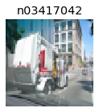
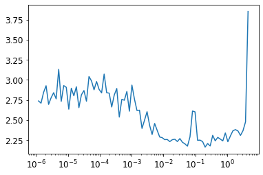
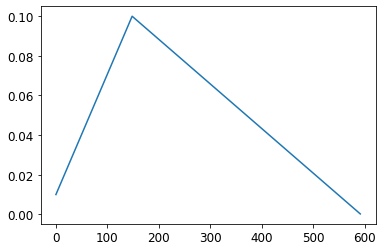

#hide
! [ -e /content ] && pip install -Uqq fastbook
import fastbook
fastbook.setup_book()A fastai Learner from Scratch
#hide
from fastbook import *This final chapter (other than the conclusion and the online chapters) is going to look a bit different. It contains far more code and far less prose than the previous chapters. We will introduce new Python keywords and libraries without discussing them. This chapter is meant to be the start of a significant research project for you. You see, we are going to implement many of the key pieces of the fastai and PyTorch APIs from scratch, building on nothing other than the components that we developed in <Learner class, and some callbacks—enough to be able to train a model on Imagenette, including examples of each of the key techniques we’ve studied. On the way to building Learner, we will create our own version of Module, Parameter, and parallel DataLoader so you have a very good idea of what those PyTorch classes do.
The end-of-chapter questionnaire is particularly important for this chapter. This is where we will be pointing you in the many interesting directions that you could take, using this chapter as your starting point. We suggest that you follow along with this chapter on your computer, and do lots of experiments, web searches, and whatever else you need to understand what’s going on. You’ve built up the skills and expertise to do this in the rest of this book, so we think you are going to do great!
Let’s begin by gathering (manually) some data.
Data
Have a look at the source to untar_data to see how it works. We’ll use it here to access the 160-pixel version of Imagenette for use in this chapter:
path = untar_data(URLs.IMAGENETTE_160)To access the image files, we can use get_image_files:
t = get_image_files(path)
t[0]Path('/home/jhoward/.fastai/data/imagenette2-160/val/n03417042/n03417042_3752.JPEG')Or we could do the same thing using just Python’s standard library, with glob:
from glob import glob
files = L(glob(f'{path}/**/*.JPEG', recursive=True)).map(Path)
files[0]Path('/home/jhoward/.fastai/data/imagenette2-160/val/n03417042/n03417042_3752.JPEG')If you look at the source for get_image_files, you’ll see it uses Python’s os.walk; this is a faster and more flexible function than glob, so be sure to try it out.
We can open an image with the Python Imaging Library’s Image class:
im = Image.open(files[0])
imim_t = tensor(im)
im_t.shapetorch.Size([160, 213, 3])That’s going to be the basis of our independent variable. For our dependent variable, we can use Path.parent from pathlib. First we’ll need our vocab:
lbls = files.map(Self.parent.name()).unique(); lbls(#10) ['n03417042','n03445777','n03888257','n03394916','n02979186','n03000684','n03425413','n01440764','n03028079','n02102040']…and the reverse mapping, thanks to L.val2idx:
v2i = lbls.val2idx(); v2i{'n03417042': 0,
'n03445777': 1,
'n03888257': 2,
'n03394916': 3,
'n02979186': 4,
'n03000684': 5,
'n03425413': 6,
'n01440764': 7,
'n03028079': 8,
'n02102040': 9}That’s all the pieces we need to put together our Dataset.
Dataset
A Dataset in PyTorch can be anything that supports indexing (__getitem__) and len:
class Dataset:
def __init__(self, fns): self.fns=fns
def __len__(self): return len(self.fns)
def __getitem__(self, i):
im = Image.open(self.fns[i]).resize((64,64)).convert('RGB')
y = v2i[self.fns[i].parent.name]
return tensor(im).float()/255, tensor(y)We need a list of training and validation filenames to pass to Dataset.__init__:
train_filt = L(o.parent.parent.name=='train' for o in files)
train,valid = files[train_filt],files[~train_filt]
len(train),len(valid)(9469, 3925)Now we can try it out:
train_ds,valid_ds = Dataset(train),Dataset(valid)
x,y = train_ds[0]
x.shape,y(torch.Size([64, 64, 3]), tensor(0))show_image(x, title=lbls[y]);
As you see, our dataset is returning the independent and dependent variables as a tuple, which is just what we need. We’ll need to be able to collate these into a mini-batch. Generally this is done with torch.stack, which is what we’ll use here:
def collate(idxs, ds):
xb,yb = zip(*[ds[i] for i in idxs])
return torch.stack(xb),torch.stack(yb)Here’s a mini-batch with two items, for testing our collate:
x,y = collate([1,2], train_ds)
x.shape,y(torch.Size([2, 64, 64, 3]), tensor([0, 0]))Now that we have a dataset and a collation function, we’re ready to create DataLoader. We’ll add two more things here: an optional shuffle for the training set, and a ProcessPoolExecutor to do our preprocessing in parallel. A parallel data loader is very important, because opening and decoding a JPEG image is a slow process. One CPU core is not enough to decode images fast enough to keep a modern GPU busy. Here’s our DataLoader class:
class DataLoader:
def __init__(self, ds, bs=128, shuffle=False, n_workers=1):
self.ds,self.bs,self.shuffle,self.n_workers = ds,bs,shuffle,n_workers
def __len__(self): return (len(self.ds)-1)//self.bs+1
def __iter__(self):
idxs = L.range(self.ds)
if self.shuffle: idxs = idxs.shuffle()
chunks = [idxs[n:n+self.bs] for n in range(0, len(self.ds), self.bs)]
with ProcessPoolExecutor(self.n_workers) as ex:
yield from ex.map(collate, chunks, ds=self.ds)Let’s try it out with our training and validation datasets:
n_workers = min(16, defaults.cpus)
train_dl = DataLoader(train_ds, bs=128, shuffle=True, n_workers=n_workers)
valid_dl = DataLoader(valid_ds, bs=256, shuffle=False, n_workers=n_workers)
xb,yb = first(train_dl)
xb.shape,yb.shape,len(train_dl)(torch.Size([128, 64, 64, 3]), torch.Size([128]), 74)This data loader is not much slower than PyTorch’s, but it’s far simpler. So if you’re debugging a complex data loading process, don’t be afraid to try doing things manually to help you see exactly what’s going on.
For normalization, we’ll need image statistics. Generally it’s fine to calculate these on a single training mini-batch, since precision isn’t needed here:
stats = [xb.mean((0,1,2)),xb.std((0,1,2))]
stats[tensor([0.4544, 0.4453, 0.4141]), tensor([0.2812, 0.2766, 0.2981])]Our Normalize class just needs to store these stats and apply them (to see why the to_device is needed, try commenting it out, and see what happens later in this notebook):
class Normalize:
def __init__(self, stats): self.stats=stats
def __call__(self, x):
if x.device != self.stats[0].device:
self.stats = to_device(self.stats, x.device)
return (x-self.stats[0])/self.stats[1]We always like to test everything we build in a notebook, as soon as we build it:
norm = Normalize(stats)
def tfm_x(x): return norm(x).permute((0,3,1,2))t = tfm_x(x)
t.mean((0,2,3)),t.std((0,2,3))(tensor([0.3732, 0.4907, 0.5633]), tensor([1.0212, 1.0311, 1.0131]))Here tfm_x isn’t just applying Normalize, but is also permuting the axis order from NHWC to NCHW (see <HWC axis order, which we can’t use with PyTorch, hence the need for this permute.
That’s all we need for the data for our model. So now we need the model itself!
Module and Parameter
To create a model, we’ll need Module. To create Module, we’ll need Parameter, so let’s start there. Recall that in <Parameter class “doesn’t actually add any functionality (other than automatically calling requires_grad_ for us). It’s only used as a”marker” to show what to include in parameters.” Here’s a definition which does exactly that:
class Parameter(Tensor):
def __new__(self, x): return Tensor._make_subclass(Parameter, x, True)
def __init__(self, *args, **kwargs): self.requires_grad_()The implementation here is a bit awkward: we have to define the special __new__ Python method and use the internal PyTorch method _make_subclass because, as at the time of writing, PyTorch doesn’t otherwise work correctly with this kind of subclassing or provide an officially supported API to do this. This may have been fixed by the time you read this, so look on the book’s website to see if there are updated details.
Our Parameter now behaves just like a tensor, as we wanted:
Parameter(tensor(3.))tensor(3., requires_grad=True)Now that we have this, we can define Module:
class Module:
def __init__(self):
self.hook,self.params,self.children,self._training = None,[],[],False
def register_parameters(self, *ps): self.params += ps
def register_modules (self, *ms): self.children += ms
@property
def training(self): return self._training
@training.setter
def training(self,v):
self._training = v
for m in self.children: m.training=v
def parameters(self):
return self.params + sum([m.parameters() for m in self.children], [])
def __setattr__(self,k,v):
super().__setattr__(k,v)
if isinstance(v,Parameter): self.register_parameters(v)
if isinstance(v,Module): self.register_modules(v)
def __call__(self, *args, **kwargs):
res = self.forward(*args, **kwargs)
if self.hook is not None: self.hook(res, args)
return res
def cuda(self):
for p in self.parameters(): p.data = p.data.cuda()The key functionality is in the definition of parameters:
self.params + sum([m.parameters() for m in self.children], [])This means that we can ask any Module for its parameters, and it will return them, including all its child modules (recursively). But how does it know what its parameters are? It’s thanks to implementing Python’s special __setattr__ method, which is called for us any time Python sets an attribute on a class. Our implementation includes this line:
if isinstance(v,Parameter): self.register_parameters(v)As you see, this is where we use our new Parameter class as a “marker”—anything of this class is added to our params.
Python’s __call__ allows us to define what happens when our object is treated as a function; we just call forward (which doesn’t exist here, so it’ll need to be added by subclasses). Before we do, we’ll call a hook, if it’s defined. Now you can see that PyTorch hooks aren’t doing anything fancy at all—they’re just calling any hooks that have been registered.
Other than these pieces of functionality, our Module also provides cuda and training attributes, which we’ll use shortly.
Now we can create our first Module, which is ConvLayer:
class ConvLayer(Module):
def __init__(self, ni, nf, stride=1, bias=True, act=True):
super().__init__()
self.w = Parameter(torch.zeros(nf,ni,3,3))
self.b = Parameter(torch.zeros(nf)) if bias else None
self.act,self.stride = act,stride
init = nn.init.kaiming_normal_ if act else nn.init.xavier_normal_
init(self.w)
def forward(self, x):
x = F.conv2d(x, self.w, self.b, stride=self.stride, padding=1)
if self.act: x = F.relu(x)
return xWe’re not implementing F.conv2d from scratch, since you should have already done that (using unfold) in the questionnaire in <Module.parameters:
l = ConvLayer(3, 4)
len(l.parameters())2And that we can call it (which will result in forward being called):
xbt = tfm_x(xb)
r = l(xbt)
r.shapetorch.Size([128, 4, 64, 64])In the same way, we can implement Linear:
class Linear(Module):
def __init__(self, ni, nf):
super().__init__()
self.w = Parameter(torch.zeros(nf,ni))
self.b = Parameter(torch.zeros(nf))
nn.init.xavier_normal_(self.w)
def forward(self, x): return x@self.w.t() + self.band test if it works:
l = Linear(4,2)
r = l(torch.ones(3,4))
r.shapetorch.Size([3, 2])Let’s also create a testing module to check that if we include multiple parameters as attributes, they are all correctly registered:
class T(Module):
def __init__(self):
super().__init__()
self.c,self.l = ConvLayer(3,4),Linear(4,2)Since we have a conv layer and a linear layer, each of which has weights and biases, we’d expect four parameters in total:
t = T()
len(t.parameters())4We should also find that calling cuda on this class puts all these parameters on the GPU:
t.cuda()
t.l.w.devicedevice(type='cuda', index=5)We can now use those pieces to create a CNN.
Simple CNN
As we’ve seen, a Sequential class makes many architectures easier to implement, so let’s make one:
class Sequential(Module):
def __init__(self, *layers):
super().__init__()
self.layers = layers
self.register_modules(*layers)
def forward(self, x):
for l in self.layers: x = l(x)
return xThe forward method here just calls each layer in turn. Note that we have to use the register_modules method we defined in Module, since otherwise the contents of layers won’t appear in parameters.
important: All The Code is Here: Remember that we’re not using any PyTorch functionality for modules here; we’re defining everything ourselves. So if you’re not sure what
register_modulesdoes, or why it’s needed, have another look at our code forModuleto see what we wrote!
We can create a simplified AdaptivePool that only handles pooling to a 1×1 output, and flattens it as well, by just using mean:
class AdaptivePool(Module):
def forward(self, x): return x.mean((2,3))That’s enough for us to create a CNN!
def simple_cnn():
return Sequential(
ConvLayer(3 ,16 ,stride=2), #32
ConvLayer(16,32 ,stride=2), #16
ConvLayer(32,64 ,stride=2), # 8
ConvLayer(64,128,stride=2), # 4
AdaptivePool(),
Linear(128, 10)
)Let’s see if our parameters are all being registered correctly:
m = simple_cnn()
len(m.parameters())10Now we can try adding a hook. Note that we’ve only left room for one hook in Module; you could make it a list, or use something like Pipeline to run a few as a single function:
def print_stats(outp, inp): print (outp.mean().item(),outp.std().item())
for i in range(4): m.layers[i].hook = print_stats
r = m(xbt)
r.shape0.5239089727401733 0.8776043057441711
0.43470510840415955 0.8347987532615662
0.4357188045978546 0.7621666193008423
0.46562111377716064 0.7416611313819885torch.Size([128, 10])We have data and model. Now we need a loss function.
Loss
We’ve already seen how to define “negative log likelihood”:
def nll(input, target): return -input[range(target.shape[0]), target].mean()Well actually, there’s no log here, since we’re using the same definition as PyTorch. That means we need to put the log together with softmax:
def log_softmax(x): return (x.exp()/(x.exp().sum(-1,keepdim=True))).log()
sm = log_softmax(r); sm[0][0]tensor(-1.2790, grad_fn=<SelectBackward>)Combining these gives us our cross-entropy loss:
loss = nll(sm, yb)
losstensor(2.5666, grad_fn=<NegBackward>)Note that the formula:
\[\log \left ( \frac{a}{b} \right ) = \log(a) - \log(b)\]
gives a simplification when we compute the log softmax, which was previously defined as (x.exp()/(x.exp().sum(-1))).log():
def log_softmax(x): return x - x.exp().sum(-1,keepdim=True).log()
sm = log_softmax(r); sm[0][0]tensor(-1.2790, grad_fn=<SelectBackward>)Then, there is a more stable way to compute the log of the sum of exponentials, called the LogSumExp trick. The idea is to use the following formula:
\[\log \left ( \sum_{j=1}^{n} e^{x_{j}} \right ) = \log \left ( e^{a} \sum_{j=1}^{n} e^{x_{j}-a} \right ) = a + \log \left ( \sum_{j=1}^{n} e^{x_{j}-a} \right )\]
where \(a\) is the maximum of \(x_{j}\).
Here’s the same thing in code:
x = torch.rand(5)
a = x.max()
x.exp().sum().log() == a + (x-a).exp().sum().log()tensor(True)We’ll put that into a function:
def logsumexp(x):
m = x.max(-1)[0]
return m + (x-m[:,None]).exp().sum(-1).log()
logsumexp(r)[0]tensor(3.9784, grad_fn=<SelectBackward>)so we can use it for our log_softmax function:
def log_softmax(x): return x - x.logsumexp(-1,keepdim=True)Which gives the same result as before:
sm = log_softmax(r); sm[0][0]tensor(-1.2790, grad_fn=<SelectBackward>)We can use these to create cross_entropy:
def cross_entropy(preds, yb): return nll(log_softmax(preds), yb).mean()Let’s now combine all those pieces together to create a Learner.
Learner
We have data, a model, and a loss function; we only need one more thing before we can fit a model, and that’s an optimizer! Here’s SGD:
class SGD:
def __init__(self, params, lr, wd=0.): store_attr()
def step(self):
for p in self.params:
p.data -= (p.grad.data + p.data*self.wd) * self.lr
p.grad.data.zero_()As we’ve seen in this book, life is easier with a Learner. The Learner class needs to know our training and validation sets, which means we need DataLoaders to store them. We don’t need any other functionality, just a place to store them and access them:
class DataLoaders:
def __init__(self, *dls): self.train,self.valid = dls
dls = DataLoaders(train_dl,valid_dl)Now we’re ready to create our Learner class:
class Learner:
def __init__(self, model, dls, loss_func, lr, cbs, opt_func=SGD):
store_attr()
for cb in cbs: cb.learner = self
def one_batch(self):
self('before_batch')
xb,yb = self.batch
self.preds = self.model(xb)
self.loss = self.loss_func(self.preds, yb)
if self.model.training:
self.loss.backward()
self.opt.step()
self('after_batch')
def one_epoch(self, train):
self.model.training = train
self('before_epoch')
dl = self.dls.train if train else self.dls.valid
for self.num,self.batch in enumerate(progress_bar(dl, leave=False)):
self.one_batch()
self('after_epoch')
def fit(self, n_epochs):
self('before_fit')
self.opt = self.opt_func(self.model.parameters(), self.lr)
self.n_epochs = n_epochs
try:
for self.epoch in range(n_epochs):
self.one_epoch(True)
self.one_epoch(False)
except CancelFitException: pass
self('after_fit')
def __call__(self,name):
for cb in self.cbs: getattr(cb,name,noop)()This is the largest class we’ve created in the book, but each method is quite small, so by looking at each in turn you should be able to follow what’s going on.
The main method we’ll be calling is fit. This loops with:
for self.epoch in range(n_epochs)and at each epoch calls self.one_epoch for each of train=True and then train=False. Then self.one_epoch calls self.one_batch for each batch in dls.train or dls.valid, as appropriate (after wrapping the DataLoader in fastprogress.progress_bar. Finally, self.one_batch follows the usual set of steps to fit one mini-batch that we’ve seen throughout this book.
Before and after each step, Learner calls self, which calls __call__ (which is standard Python functionality). __call__ uses getattr(cb,name) on each callback in self.cbs, which is a Python built-in function that returns the attribute (a method, in this case) with the requested name. So, for instance, self('before_fit') will call cb.before_fit() for each callback where that method is defined.
As you can see, Learner is really just using our standard training loop, except that it’s also calling callbacks at appropriate times. So let’s define some callbacks!
Callbacks
In Learner.__init__ we have:
for cb in cbs: cb.learner = selfIn other words, every callback knows what learner it is used in. This is critical, since otherwise a callback can’t get information from the learner, or change things in the learner. Because getting information from the learner is so common, we make that easier by defining Callback as a subclass of GetAttr, with a default attribute of learner:
class Callback(GetAttr): _default='learner'GetAttr is a fastai class that implements Python’s standard __getattr__ and __dir__ methods for you, such that any time you try to access an attribute that doesn’t exist, it passes the request along to whatever you have defined as _default.
For instance, we want to move all model parameters to the GPU automatically at the start of fit. We could do this by defining before_fit as self.learner.model.cuda(); however, because learner is the default attribute, and we have SetupLearnerCB inherit from Callback (which inherits from GetAttr), we can remove the .learner and just call self.model.cuda():
class SetupLearnerCB(Callback):
def before_batch(self):
xb,yb = to_device(self.batch)
self.learner.batch = tfm_x(xb),yb
def before_fit(self): self.model.cuda()In SetupLearnerCB we also move each mini-batch to the GPU, by calling to_device(self.batch) (we could also have used the longer to_device(self.learner.batch). Note however that in the line self.learner.batch = tfm_x(xb),yb we can’t remove .learner, because here we’re setting the attribute, not getting it.
Before we try our Learner out, let’s create a callback to track and print progress. Otherwise we won’t really know if it’s working properly:
class TrackResults(Callback):
def before_epoch(self): self.accs,self.losses,self.ns = [],[],[]
def after_epoch(self):
n = sum(self.ns)
print(self.epoch, self.model.training,
sum(self.losses).item()/n, sum(self.accs).item()/n)
def after_batch(self):
xb,yb = self.batch
acc = (self.preds.argmax(dim=1)==yb).float().sum()
self.accs.append(acc)
n = len(xb)
self.losses.append(self.loss*n)
self.ns.append(n)Now we’re ready to use our Learner for the first time!
cbs = [SetupLearnerCB(),TrackResults()]
learn = Learner(simple_cnn(), dls, cross_entropy, lr=0.1, cbs=cbs)
learn.fit(1)0 True 2.1275552130636814 0.23149223782870420 False 1.9942575636942674 0.2991082802547771It’s quite amazing to realize that we can implement all the key ideas from fastai’s Learner in so little code! Let’s now add some learning rate scheduling.
Scheduling the Learning Rate
If we’re going to get good results, we’ll want an LR finder and 1cycle training. These are both annealing callbacks—that is, they are gradually changing hyperparameters as we train. Here’s LRFinder:
class LRFinder(Callback):
def before_fit(self):
self.losses,self.lrs = [],[]
self.learner.lr = 1e-6
def before_batch(self):
if not self.model.training: return
self.opt.lr *= 1.2
def after_batch(self):
if not self.model.training: return
if self.opt.lr>10 or torch.isnan(self.loss): raise CancelFitException
self.losses.append(self.loss.item())
self.lrs.append(self.opt.lr)This shows how we’re using CancelFitException, which is itself an empty class, only used to signify the type of exception. You can see in Learner that this exception is caught. (You should add and test CancelBatchException, CancelEpochException, etc. yourself.) Let’s try it out, by adding it to our list of callbacks:
lrfind = LRFinder()
learn = Learner(simple_cnn(), dls, cross_entropy, lr=0.1, cbs=cbs+[lrfind])
learn.fit(2)0 True 2.6336045582954903 0.110148906959552220 False 2.230653363853503 0.18318471337579617
16.22% [12/74 00:02<00:12]
And take a look at the results:
plt.plot(lrfind.lrs[:-2],lrfind.losses[:-2])
plt.xscale('log')
Now we can define our OneCycle training callback:
class OneCycle(Callback):
def __init__(self, base_lr): self.base_lr = base_lr
def before_fit(self): self.lrs = []
def before_batch(self):
if not self.model.training: return
n = len(self.dls.train)
bn = self.epoch*n + self.num
mn = self.n_epochs*n
pct = bn/mn
pct_start,div_start = 0.25,10
if pct<pct_start:
pct /= pct_start
lr = (1-pct)*self.base_lr/div_start + pct*self.base_lr
else:
pct = (pct-pct_start)/(1-pct_start)
lr = (1-pct)*self.base_lr
self.opt.lr = lr
self.lrs.append(lr)We’ll try an LR of 0.1:
onecyc = OneCycle(0.1)
learn = Learner(simple_cnn(), dls, cross_entropy, lr=0.1, cbs=cbs+[onecyc])Let’s fit for a while and see how it looks (we won’t show all the output in the book—try it in the notebook to see the results):
#hide_output
learn.fit(8)Finally, we’ll check that the learning rate followed the schedule we defined (as you see, we’re not using cosine annealing here):
plt.plot(onecyc.lrs);
Conclusion
We have explored how the key concepts of the fastai library are implemented by re-implementing them in this chapter. Since it’s mostly full of code, you should definitely try to experiment with it by looking at the corresponding notebook on the book’s website. Now that you know how it’s built, as a next step be sure to check out the intermediate and advanced tutorials in the fastai documentation to learn how to customize every bit of the library.
Questionnaire
tip: Experiments: For the questions here that ask you to explain what some function or class is, you should also complete your own code experiments.
- What is
glob? - How do you open an image with the Python imaging library?
- What does
L.mapdo? - What does
Selfdo? - What is
L.val2idx? - What methods do you need to implement to create your own
Dataset? - Why do we call
convertwhen we open an image from Imagenette? - What does
~do? How is it useful for splitting training and validation sets? - Does
~work with theLorTensorclasses? What about NumPy arrays, Python lists, or pandas DataFrames? - What is
ProcessPoolExecutor? - How does
L.range(self.ds)work? - What is
__iter__? - What is
first? - What is
permute? Why is it needed? - What is a recursive function? How does it help us define the
parametersmethod? - Write a recursive function that returns the first 20 items of the Fibonacci sequence.
- What is
super? - Why do subclasses of
Moduleneed to overrideforwardinstead of defining__call__? - In
ConvLayer, why doesinitdepend onact? - Why does
Sequentialneed to callregister_modules? - Write a hook that prints the shape of every layer’s activations.
- What is “LogSumExp”?
- Why is
log_softmaxuseful? - What is
GetAttr? How is it helpful for callbacks? - Reimplement one of the callbacks in this chapter without inheriting from
CallbackorGetAttr. - What does
Learner.__call__do? - What is
getattr? (Note the case difference toGetAttr!) - Why is there a
tryblock infit? - Why do we check for
model.traininginone_batch? - What is
store_attr? - What is the purpose of
TrackResults.before_epoch? - What does
model.cudado? How does it work? - Why do we need to check
model.traininginLRFinderandOneCycle? - Use cosine annealing in
OneCycle.
Further Research
- Write
resnet18from scratch (refer to <> as needed), and train it with the Learnerin this chapter. - Implement a batchnorm layer from scratch and use it in your
resnet18. - Write a Mixup callback for use in this chapter.
- Add momentum to SGD.
- Pick a few features that you’re interested in from fastai (or any other library) and implement them in this chapter.
- Pick a research paper that’s not yet implemented in fastai or PyTorch and implement it in this chapter.
- Port it over to fastai.
- Submit a pull request to fastai, or create your own extension module and release it.
- Hint: you may find it helpful to use
nbdevto create and deploy your package.